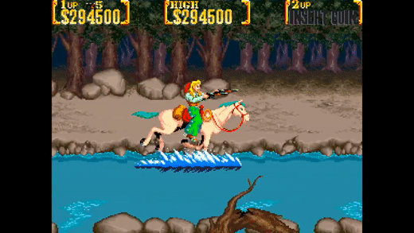

Uma emboscada na floresta
Você decide sair do vilarejo onde estava e seguir buscando novas pistas, algo lhe diz que é melhor investigar sem envolver muitas outras pessoas nisso, pode ser perigoso. Você descobre que muitas pessoas são "compradas" por Sir Richard Rose e é melhor não falar esse nome para qualquer um.
Depois de cavalgar quase um dia todo, ao entardecer, você se encontra em uma floresta. Você tem convicções de que esse pode ser o caminho para o grande forte secreto do grande magnata.
Quando você menos espera bandidos surgem por todos os lados, à cavalo e fortemente armados.
